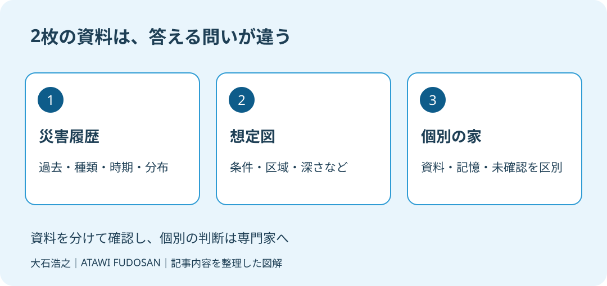

実家を売る準備で地図を開いたとき、過去の水害の色と、浸水を想定した色が重なって見える。どちらを買主へ説明すればよいのか、家族も迷うはずです。色の付いた場所だけ切り取ると、違う意味の資料を同じものとして読んでしまいます。
大石浩之（磐田市／不動産業）です。宅地建物取引士として、地図の表示をそのまま個別の家の被害認定に使わないよう案内します。2026年10月10日に国土交通省の資料を確認し、売主が準備する二つの確認を整理しました。
過去の記録と将来の想定を分ける
国土交通省は2025年12月17日、不動産情報ライブラリへ災害履歴のデータを追加したと公表しました。対象は水害、土砂災害、地震災害です。土地分類基本調査の土地履歴調査で作成した災害履歴図をもとにしています。
国土交通省の説明では、災害履歴は、過去の災害の種類、発生時期、分布状況などを整理した情報です。地図上では、地価公示や都市計画、防災情報などと重ね合わせて表示できます。2026年10月に初めて発表された機能として紹介しているわけではありません。
同じ発表資料は、災害履歴と洪水浸水想定区域、土砂災害警戒区域の重ね合わせを示しています。過去の出来事を整理する層と、想定や指定を示す層は別の資料です。ハザードマップという呼び方だけで、載っている情報を一種類だと考えないことです。
私は、売却前の説明では「この地図は何の問いに答えるか」を先に言葉にする方法を勧めます。過去にどんな災害が記録された地域かを見るのか。一定の条件でどんな影響が想定されるかを見るのか。家が実際に被災したかを確かめるのか。この三つを分けます。

確認1：災害履歴の調査範囲を見る
災害履歴を使う最初の確認は、対象地域と調査時期です。国土交通省の発表は、情報の詳細、調査地域、調査時期について別紙を参照するよう案内しています。全国のすべての家の被災事実を網羅する、と説明しているわけではありません。
私なら、物件の場所を表示した後、選んだ災害の種類と資料の説明を控えます。地図に色がないときも、そこで作業を終えません。表示範囲の問題なのか、収録対象なのか、記録として何を示しているのかを確かめ、判断できなければ未確認と記します。
意外かもしれませんが、「表示が見当たらない」という観察から、「この家は被災したことがない」という結論へは進めません。地域の分布図と一棟ごとの履歴は確認する単位が異なります。家族の記憶や工事資料も、地図とは分けて集める必要があります。
保存するときは、物件付近だけを狭く切り抜かず、資料名、凡例、表示した場所の分かる範囲を残します。家族が別の日に見直して、同じ条件を再現できるようにするためです。画面を保存した日も書き、調査そのものの日付と混同しません。
今回、磐田市・袋井市の個別物件について、収録状況や被災事実は確認していません。住所を入れたら必ず必要な記録がそろう、と約束する記事でもありません。物件ごとの確認は、資料の説明と照らして進めます。
確認2：想定図の条件と凡例を読む
洪水浸水想定区域などの想定図では、何を想定した資料かと、色や記号の意味を確認します。過去の災害履歴と同じ配色に見えても、同じ意味とは限りません。売却の説明に使うときは、資料の名称と凡例を一緒に渡します。
| 資料 | 読むときの問い | 避けたい飛躍 |
|---|---|---|
| 災害履歴 | どの時期・地域・種類の記録か | 色がないから被災歴がない |
| 洪水などの想定図 | どの条件で、何を想定するか | 区域内なら必ず同じ被害が出る |
| 家族の資料 | この家で何を確認したか | 記憶だけで時期や原因を確定する |
私は、資料が違えば確認欄も分けるよう提案します。洪水の図を確認したから、ほかの種類の災害も確認済みとは扱いません。土地と建物の位置、地図の縮尺、どの表示を選んだかを揃え、家族と仲介業者が同じ画面を見て話せる状態にします。
区域の境目に近い家では、画面上の見た目だけで線の内外を断定しないようにします。仲介業者へ、どの資料をもとにどう確認するかを尋ねます。私がこの段階でできるのは、確認の入口を揃えることです。個別の安全性を図だけで保証することはできません。
想定区域内の実家を売るときの説明は、ハザード情報と実家売却で扱っています。この記事は、売り方を決める前に、資料の性格を取り違えないための準備です。
重ね合わせの良さと、説明での限界
不動産情報ライブラリで資料を重ねられる良さは、異なる情報を同じ場所で比較できることです。これは私の評価です。過去の履歴を調べた場所を、別の地図で探し直す手間を減らせます。確認する地域が揃えば、家族と仲介業者の質問も合わせやすくなります。
そのうえで私が注文したいのは、重ねた画面一枚を「安全か危険か」の判定書にしないことです。色が重なるほど強い結論に見えますが、資料ごとの対象と時期は同じではありません。説明するときは、各資料を別々に表示した控えも残したいと考えます。
家族が「昔、床下に水が来たと聞いた」と覚えているなら、誰の記憶なのか、年月は分かるか、写真や修繕の記録はあるかを整理します。聞いた話を確定した被害として書き換えず、かといって地図にないから捨てることもしません。情報の確かさを添えて仲介業者へ渡します。
修理の資料を探す方法は、住宅履歴情報の整理につながります。工事記録に日付と場所があっても、原因まで書かれているとは限りません。水害が原因だったかどうかを、領収書の金額から推測しないようにします。
私は、記憶が曖昧なままどこまで説明を具体化できるかには迷いがあります。だからこそ「不明」を消して文章を整えることはしません。売主が把握する不具合や履歴と契約の扱いは、契約不適合責任の確認も踏まえ、仲介業者や弁護士へ相談します。
磐田・袋井で売主が残す確認メモ
磐田市・袋井市で売却を準備する持ち主には、災害履歴と想定図をそれぞれ一度表示し、資料名と確認日を控える方法を提案します。今日の成果は安全宣言ではなく、どの資料を見て何が分からなかったかを一つ説明できることです。
私はこう考えます。家族で画面を見る場面なら、まず災害履歴だけを表示し、次に想定図だけへ切り替えたい。二つを見た後で重ね、気になる場所に質問を付けます。親御さんの記憶は別の欄に置き、資料で確認できた内容と混ぜません。これは現場の体験談ではなく、災害への備えと売却準備を、無理のない確認手順にするための私の提案です。
遠方の家族が現地へ行く予定なら、地図で生じた疑問を先に共有します。現地で確認できること、窓口や専門家に尋ねることを分ければ、訪問日にすべてを解決しようとせずに済みます。危険な場所へ調べに入るのではなく、残っている資料や安全に見える範囲から集めます。
- 履歴は対象地域・時期・災害の種類を控える。
- 想定図は資料名・条件・凡例を残す。
- 個別の家の記録と未確認事項を仲介業者へ渡す。
富士ヶ丘サービスは磐田・袋井で介護と不動産を一体で相談し、家族が困らない売却を支えます。私は地図を理由に売却を急がせず、確認した範囲を説明できる状態から案内します。重要事項の説明、契約、建物の状態などの個別判断は、それぞれの専門家に確認してください。
磐田市・袋井市では、介護施設の運営から不動産事業を始めた富士ヶ丘サービスのような地域密着の会社に、売却前の資料整理から相談する選択肢があります。